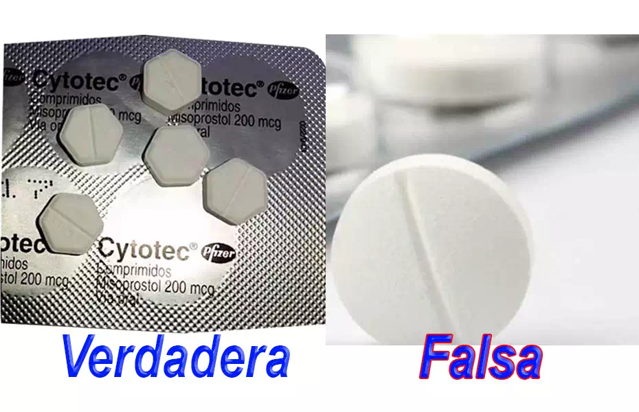

Cómo identificar pastillas abortivas Cytotec originales
-
addContenido
Es muy importante que las mujeres que desean comprar Cytotec en Perú sepan cómo detectar el medicamento original de laboratorios Pfizer, ya que existen medicamentos falsos en el mercado.
A continuación, les presentamos las señas particulares que se deben buscar para lograr detectar cualquier falsificación de Cytotec.
Identificar las características físicas al momento de comprar las pastillas Cytotec originales en Perú. es un aval de seguridad y efectividad para realizar el aborto casero de manera efectiva, nosotros vendemos Las Cytotec originales son fáciles de identificar, a la vez que pueden verificar ciertos aspectos que garanticen la autenticidad en la compra de pastillas abortivas, los medicamentos originales de laboratorios Pfizer, ya que existen medicamentos falsos en el mercado.
Nosotros garantizamos la venta de Cytotec originales, sin receta médica en Perú.
Las cajas de Cytotec.
Presenta una paleta de colores entre blancos, azules en distintas tonalidades y un rosa
Las abreviaturas de microgramo (mcg) se presenta en un tono rosa o magenta
El color azul oscuro se encuentra en la parte superior de la caja donde se coloca el nombre del laboratorio dentro de un circulo blanco y debajo colocan una línea en tono azul claro
Los blísteres:
- Son de color metálico.
- El blíster de pastillas debe encontrarse totalmente sellado de manera hermética,
- las pastillas deben estar dentro de este
- el blíster usualmente en la parte trasera debe tener el nombre de Cytotec acompañado de un número de lote y la fecha de caducidad de las pastillas.
- Adicional debe tener la fecha de elaboración, la fecha de caducidad y el registro sanitario.
Las pastillas:
También debe ser de forma hexagonal con 6 lados iguales.
Tiene que ser biselada y con un surco en la mitad de la pastilla.
debe tener el código 1461 perfectamente elaborado en cada pastilla.
Es de gran importancia conocer cuáles son las características físicas de las píldoras Cytotec de laboratorios Pfizer. Ya garantizan su autenticidad es fundamental, para asegurar su efectividad y sobre todo que no afecte tu salud